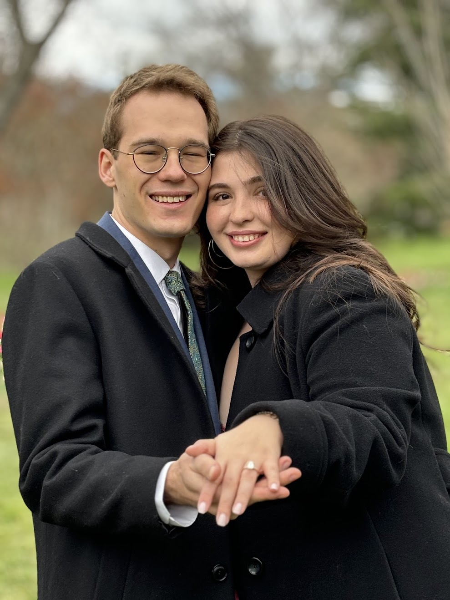

It started the way most great love stories do — completely by accident. We found each other in Houston, in the kind of ordinary moment that turned out to be anything but. From the very beginning, something felt different. Easier. Like we had known each other far longer than the calendar would allow.
Our first conversations stretched long past midnight. We discovered that we shared the same vision for a life well-lived — filled with good food, great people, and a deep belief that the best adventures are always the ones you take together.
Houston became the backdrop to all of it: morning runs along Buffalo Bayou, long dinners in Montrose, quiet Sundays that somehow always turned into something memorable. We fell in love with each other and with this city in the same breath.
After years of building a life together — of choosing each other, over and over — the moment finally came. A yes that had been living in our hearts for a long time. And now, on March 13th, 2027, we get to say it out loud, in front of everyone we love.

River Oaks Garden Club · March 13, 2027
The Beginning
We met in Houston — the city that would become the center of our world. A chance encounter that neither of us saw coming.
Adventure Begins
Our first trip together. We discovered that we travel the same way we live — curious, spontaneous, and always finding the best local spots.
Home in Houston
We made it official — Houston is home. We fell in love with Montrose and started dreaming about roots, and everything that word means.
The Proposal
He asked. She said yes. The rest, as they say, is history — and a very exciting future.
The Wedding
March 13th. River Oaks Garden Club. The day we celebrate with every person who helped shape our story.
March 13, 2027 · River Oaks Garden Club
Travel Info Registry